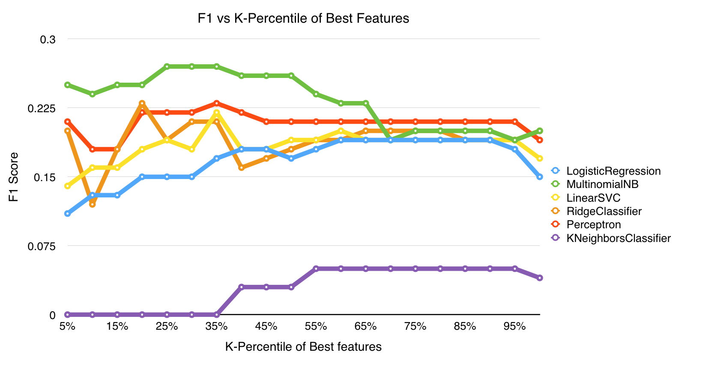

In today's information age, we are all constantly barraged with content, from YouTube clips and tweets, to Buzzfeed-style listicles, longform journalism and other time consuming material. The rapid increase of the rate at which this content is generated makes it impossible for anyone to actually consume all the content published, and we as users must rely on recommendations to select how to spend our time when reading online.
By using scikit-learn's modeling tools we were able to benchmark the performance on the task with multiple classifying algorithms studied in class. We attempted to use perceptron, logistic regression, Naive Bayes, nearest neighbors, and SVC classifiers, among others.
For every algorithm, we performed dimensionality reduction to avoid overfitting by means of chi squared statistic testing. For each model, we selected the k-percentile features with the highest χ² significance. Our models were run for multiple values of k, and the various models' performance are shown in the figures 1 and 2, showing the change in performance as we increased the number of features included.
The models' validity was ensured by using 10-fold CV. There was a negative effect on the overall values of precision, accuracy and F1 scores, as the cross validated models avoid overfitting and theoretically should be more effective at predicting observations that deviate from the training data set. The performance of the cross validated models can be seen on figures 3 and 4.
Our best model, a Multinomial Naive Bayes is in 25-30% F1-score range, and above 25% precision, clearly performing at a significant level above the baseline of 11%. Some words that ranked as good features were netflix, amazon, market, internet, labor, artificial, physics, dollar, bitcoin, paradox. We can see how the learner found words that are very relevant to our reading interests, such as technology, economics and startups.